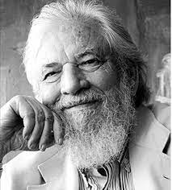

‘ Será que você realmente se conhece? ’
Este site é dedicado para os que desejam saber mais sobre o eneagrama. Embarque nesta jornada de auto-conhecimento.
“ O que é o eneagrama? ”
O eneagrama, como é possível ver na imagem abaixo, é uma ferramenta que retrata tipos psicológicos que, por sua vez, correspondem a nove tipos de personalidades representadas pela figura geométrica resultante da união de um círculo, um triângulo e uma hexade.
" Como ele funciona? "
Composto por um círculo, um triângulo e uma hexade, o eneagrama é uma figura geométrica de nove pontas. Pode ser usado na compreensão e estudo de qualquer processo contínuo. Sua lógica é que o fim é sempre o início de um novo ciclo.
" Quem criou? Onde criou? "
O Eneagrama teve suas origens no Oriente Médio com os sumérios e tornou-se uma parte integral da tradição Sufi, uma vertente mística do Islã. À medida que a cidade de Alexandria se desenvolvia e reunia diversos sábios, o Eneagrama ganhava mais destaque como um estudo da consciência humana. De acordo com estudos, o Eneagrama foi originalmente concebido para representar os movimentos dos astros e as leis matemáticas universais.
Alguns estudiosos da área:
Destaca-se a presença de Claudio Naranjo, um psiquiatra chileno que residia nos Estados Unidos e lecionava na Universidade de Berkeley. Ele desempenhou um papel importante no estudo e na propagação do Eneagrama da Personalidade.
Oscar Ichazo, filósofo boliviano que, assim como Gurdjieff, era fascinado pela ideia de recuperar conhecimentos perdidos, pesquisou e sintetizou os vários elementos do eneagrama. No início da década de 60, Ichazo associou as nove pontas do símbolo aos nove tributos divinos que refletem a natureza humana, oriundos da tradição cristã. Nascia a relação entre o eneagrama e os tipos de personalidade
" Como descobrir meu tipo? "
Apesar de existirem muitos sites pela internet afirmando que podem conhecer sua mente com apenas uma rodada de perguntas, somente a pessoa em si poderá afirmar qual tipo de personalidade tem. Seguindo este pensamento, a forma mais precisa de encontrar o seu tipo é analisando todos os 9 tipos e tirando por si mesmo(a) a conclusão sobre seu tipo de personalidade.
" Como funcionam os subtipos? "
Cada perfil do eneagrama tem seu lugar por uma razão. Os subtipos são como uma mescla de perfis, onde o perfil do número sucessor ou antecessor pode ter influência no seu tipo principal. Por exemplo: Digamos que me identifico com o tipo 3. Se também acho que possuo alguns traços de personalidade do tipo 4, posso ser um 3W4, mas se me identifico com bastantes traços do tipo 2, posso ser um 3W2.
" O que são as 'tríades'? "
No eneagrama, há três emoções que irão ser presentes nas personalidade de cada tipo: raiva, vergonha e medo. Estas emoções formam as tríades Instintiva(raiva, tipos 8, 9 e 1), Emocionais(vergonha, tipos 2, 3 e 4) e Mental(medo, tipos 5, 6 e 7). Apesar de possuírem a mesma emoção predominante, todos os tipos vão lidar com ela de uma forma diferente.